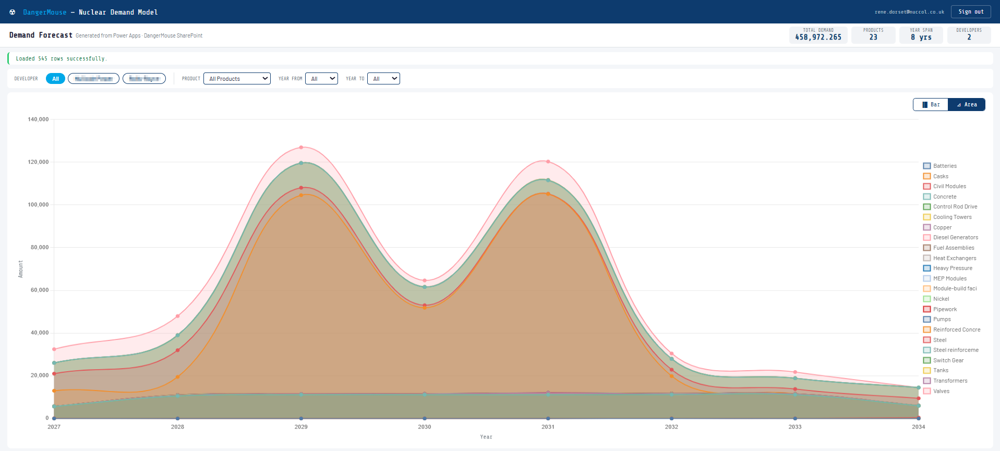

Translating programme schedules into commodity-level supply chain demand — giving programme teams, government bodies, and regional agencies a clear, data-driven view of what is needed, when, and from which tier.
Major nuclear and energy infrastructure programmes represent enormous, complex supply chain demands — spread across hundreds of commodity types, multiple tiers, and decade-long delivery windows. Without modelling that demand in advance, programme teams face supply chain gaps, and UK manufacturers miss the preparation time they need.
NucCol's demand modelling capability takes programme data — schedules, bill of materials, technical specifications, and volume assumptions — and translates it into a structured, commodity-level picture of supply chain demand over time. The result is a shared, evidence-based view that programme teams can plan against and suppliers can prepare for.

Demand modelling spans the full breadth of nuclear and energy infrastructure commodities — from structural civil works through to specialist nuclear-grade components and systems.
Pumps, valves, heat exchangers, pressure vessels, and associated mechanical plant.
Switchgear, transformers, cabling, control systems, and instrumentation packages.
Concrete, reinforcement, structural steelwork, and modular civil construction elements.
Nuclear-grade pipework, pressure-retaining fabrications, and specialist weld assemblies.
Fuel assemblies, control rod drives, reactor vessel internals, and shielding systems.
Backup power systems, battery arrays, diesel generators, and UPS infrastructure.
Modular construction packages — MEP modules, structural modules, and pre-fabricated assemblies.
Cooling towers, heat rejection systems, HVAC plant, and associated process systems.
A structured engagement that takes programme inputs and produces a validated, actionable demand picture — typically delivered over six to twelve weeks depending on programme complexity.
We work with programme teams to gather and structure the inputs — schedules, bill of materials, technical specifications, build sequences, and volume assumptions. Where data gaps exist, we apply validated assumptions based on comparable programmes.
Raw programme data is mapped to NucCol's commodity taxonomy — a structured hierarchy of components, systems, and subsystems that enables consistent comparison across programmes and developers.
Demand is modelled over time — by commodity, by tier, and by programme phase — producing demand curves that show peak requirements, lead time windows, and critical path supply constraints.
Modelled demand is cross-referenced against NucCol's supplier database and SCRL assessment data to identify where UK supply capability exists, where it is marginal, and where significant gaps or single-source risks remain.
Where programmes are uncertain in scope or timing, we model alternative scenarios — enabling planners to understand how demand shifts under different build rates, technology choices, or policy assumptions.
Outputs are delivered as structured data, charts, and written reports — formatted for programme teams, government briefings, or public consultation depending on the client's needs. Interactive visualisations are available for ongoing live access.
Structured, actionable deliverables that can feed directly into programme planning, procurement strategy, regional industrial policy, and supplier development programmes.
A full, structured breakdown of demand by commodity type across the programme lifecycle — with volume estimates, timing windows, and tier-level attribution.
Graphical demand curves by commodity, phase, and year — showing peak demand windows, lead time criticality, and cumulative programme requirements.
Identification of commodities where UK supply capability is insufficient, marginal, or concentrated in single sources — with risk ratings and recommended intervention priorities.
Side-by-side demand modelling under alternative programme assumptions — supporting robust planning under uncertainty and informing technology choice decisions.
Structured bill of materials data mapped to NucCol's commodity taxonomy — reusable across multiple planning, procurement, and supplier engagement activities.
A concise, non-technical summary of key findings — suitable for government briefings, board presentations, and public communications on UK content and supply chain readiness.
Demand modelling is commissioned by a wide range of organisations — wherever there is a need to understand future supply chain requirements before they materialise.
Build confidence in your supply chain strategy before procurement begins. Identify single-source risks, capacity constraints, and lead time issues while there is still time to act.
Understand national and regional supply chain demand to inform industrial strategy, target development funding, and maximise UK content across major infrastructure programmes.
Map programme demand against regional supply base capability to target skills investment, infrastructure planning, and business support where they will have the greatest impact.
Demand modelling works best alongside NucCol's supply base intelligence and supplier development capability.
Whether you are planning a major programme, developing regional industrial strategy, or building a procurement case — talk to NucCol about commissioning a demand model.